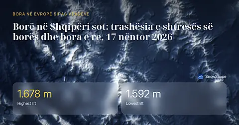
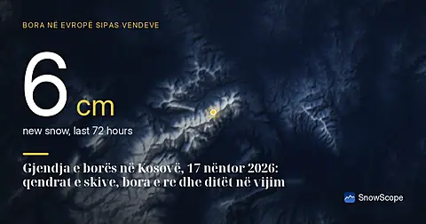
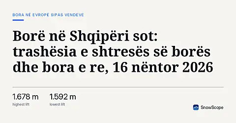
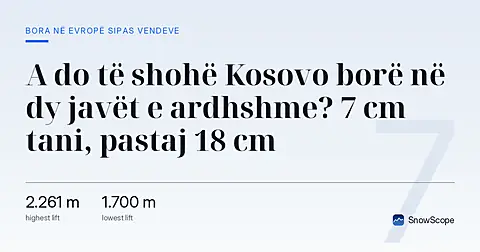

Raporte bore · Bora në Evropë sipas vendeve
Bora në Evropë sipas vendeve: Në Shqipëri sot rreth 60 km² janë nën borë (e martë, 17 nëntor). Kjo është 80 km² më pak se dje.
Snow by country today
The whitest countries today: Ukraine (100 %), Sweden (96 %) and Finland (94 %).
Most new snow in the week ahead: North Macedonia (52 cm), Greece (48 cm) and Bulgaria (46 cm).
| Country | White | Deepest resort | Next 7 days |
|---|---|---|---|
| Ukraine | 100 % | Драгобрат · 20 cm | 8 cm |
| Sweden | 96 % | Björkliden · 138 cm | 13 cm |
| Finland | 94 % | Serena Ski · 32 cm | 5 cm |
| Poland | 94 % | Kasprowy Wierch · 35 cm | 10 cm |
| Norway | 92 % | Riksgränsen · 166 cm | 22 cm |
| Romania | 73 % | Șureanu · 38 cm | 32 cm |
| Switzerland | 72 % | Les Marecottes · 120 cm | 25 cm |
| Andorra | 61 % | Canaro · 13 cm | 18 cm |
| Slovakia | 56 % | Vysoké Tatry · 32 cm | 11 cm |
| Austria | 54 % | Stubaier Gletscher · 65 cm | 24 cm |
| Italy | 32 % | La Thuile ski · 78 cm | 32 cm |
| Slovenia | 29 % | Sella Nevea · 33 cm | 39 cm |
| UK | 28 % | Glenshee · 24 cm | 23 cm |
| Montenegro | 27 % | Ski centar Savin kuk · 23 cm | 28 cm |
| France | 20 % | La Grave · 158 cm | 33 cm |
| Czechia | 18 % | Košťálka · 25 cm | 11 cm |
| Bosnia and Herzegovina | 15 % | Malo polje Igman (ZOI '84) · 17 cm | 21 cm |
| Germany | 14 % | Zugspitze · 59 cm | 6 cm |
| Kosovo | 14 % | Brezovica · 26 cm | 46 cm |
| Croatia | 9 % | Sljeme · 16 cm | 23 cm |
| North Macedonia | 9 % | Скијачки центар Попова шапка · 14 cm | 52 cm |
| Albania | 8 % | – | 32 cm |
| Serbia | 7 % | Stara planina · 14 cm | 36 cm |
| Spain | 5 % | Formigal · 17 cm | 18 cm |
| Bulgaria | 4 % | Bansko · 25 cm | 46 cm |
| Portugal | 2 % | – | 4 cm |
| Greece | 0 % | Elatohori · 7 cm | 48 cm |
| Hungary | 0 % | – | 12 cm |
| Ireland | 0 % | – | 0 cm |
Borë në Shqipëri sot: trashësia e shtresës së borës dhe bora e re, 17 nëntor 2026

Në Shqipëri sot rreth 60 km² janë nën borë (e martë, 17 nëntor). Kjo është 80 km² më pak se dje.
Shtresa e borës sot
Kjo është afër 30 km² të një jave më parë. Terreni është kryesisht i bardhë nga rreth 2.200 m e lart.

Borë në Shqipëri më 17 nëntor: shtresa e borës, bora e re, trashësia sipas lartësisë, ditët në vijim dhe qendrat më të mira.

Borë në Kosovë më 17 nëntor: shtresa e borës, bora e re, trashësia sipas lartësisë, ditët në vijim dhe qendrat më të mira.

Shqipëria parashikon 9 cm dëborë që rritet në 22 cm gjatë dy javësh, bazuar në modelin tonë nga 16 nëntor.

Perspektiva e borës në Kosovë për dy javë: 7 cm deri më 23 nëntor dhe deri 18 cm nga 24-30 nëntor, bazuar në të dhënat satelitore të 16 nëntorit.